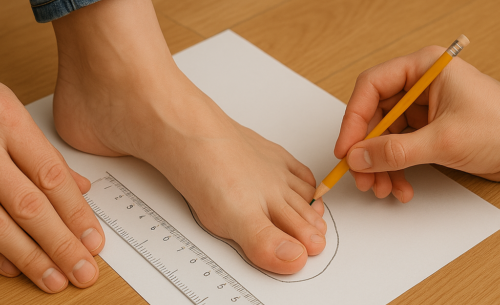
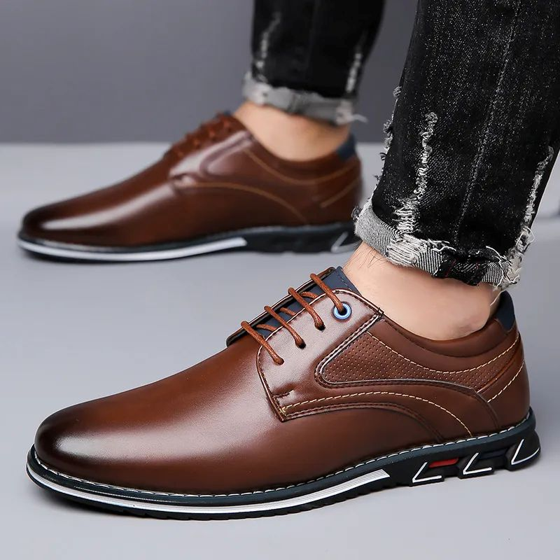

Descubre los zapatos de mayor calidad y mejor precio
CatálogoCon 29 años de experiencia en el ramo del calzado, FAZ es pionera, desarrolladora y líder en la venta de calzado por catálogo. Nuestro prestigio se respalda con productos de moda, calidad y precio accesible, resultado de investigaciones a nivel internacional y del uso de alta tecnología de fabricación.
Ofrecer una amplia gama de modelos y estilos utilizando materiales de alta calidad.
Poner al alcance de todo el público todos nuestros productos en cualquier parte del país.
Retroalimentarnos con todos nuestros clientes y distribuidores para generar nuevos e innovadores estilos.
Nuestra misión es ofrecer calzado a todo el público una opción moderna y cómoda para su calzado de acuerdo a las normas de calidad actuales de nuestro país.
Popularizada en la época de Napoleón. El “punto París” mide 2/3 cm (6,667 mm). Se añadieron medias tallas. Ej.: nº 40,5 ≈ 27 cm.
Fijada por Eduardo II, basada en granos de cebada: 1/3 pulgada (0,846 cm) por talla. Comienza en 22 cm (size 1 = 33 francesa). Ej.: nº 8 inglés ≈ 42 francés. Tallaje común hombres: 5,5 (39 fr.) a 11 (46 fr.).
Igual que la inglesa, pero el inicio de la escala está adelantado 1,116 mm, por lo que cada número comienza antes.
Se elabora a partir de valores medios, garantizando buen ajuste.
Las plantillas se cortan con máquina a la medida para minimizar desperdicio.

Se pega a la plantilla; luego se coserá el cerquillo y la pala.
Los zapateros a medida separan la pestaña de la plantilla y trabajan sin máquina.
Dos plantillas con pestañas dobladas hacia arriba listas para ensamblar.

Se cortan las partes de la pala mientras se preparan plantillas y pestañas.
Se cosen las partes, uniendo la pala con el forro, parcialmente a mano.
La pala se coloca sobre la horma, se cose a la pestaña y al cerquillo.
La costura une pala, pestaña y cerquillo; la suela se asegura con clavos internos.
El hueco entre cerquillo y suela se rellena con corcho y resina.

Se cose al cerquillo con máquina; la costura visible no compromete la sujeción.
Compuesto por 4-5 capas de piel y una de goma para resistencia y durabilidad.
Los zapatos son la prenda más importante en el atuendo de un hombre; un vestuario perfecto se arruina con calzado de mala calidad. Para un estilo elegante, conviene destinar la mayor parte del presupuesto a buenos zapatos y tener al menos dos pares, dejando que descansen un día tras su uso.
Las marcas reconocidas suelen ofrecer garantía de calidad, ya que un mal producto solo se puede vender una vez. Algunas marcas de prestigio incluyen:
Allen-Edmonds, Alden, Bass, Sebago, Timberland, Florsheim
Church's, Tricker's, Foster & Son, Edward Green, Crockett & Jones, Cheaney
Gucci, Moreschi, Gravati, Fratelli Rosetti, J.P. Tod's
Si encuentras marcas desconocidas, es recomendable desconfiar, a menos que estés seguro de que se trata de una revelación de calidad. Es mejor invertir en marcas reconocidas, y guardar los zapatos nuevos correctamente para prolongar su vida útil.
Para mantener la calidad y prolongar la vida de tus zapatos, sigue estas sencillas reglas de uso y cuidado diario.
Usar zapatos nuevos solo 2–3 horas al principio.
No usar el mismo par dos días seguidos; dejarlos reposar 24 horas.
Usar siempre calzador.
Aflojar todos los cordones antes de descalzarse.
Colocar hormas extendedoras inmediatamente después de usarlos.
Si se mojan, poner hormas y secar de lado durante un día.
Cepillar después de cada uso, aunque parezcan limpios.
Si no se usan, aplicar betún y guardarlos en su bolsa y caja.
No prestar zapatos hechos a medida.
Reservar cada par para ocasiones apropiadas.
No existen dos pies que sean exactamente iguales. Por este motivo, a un zapatero solamente le es posible confeccionar zapatos cómodos de las medidas correspondientes cuando dispone de toda la información necesario sobre los dos pies del cliente. La toma de medidas para confeccionar unos zapatos es una especie de ceremonia en la que el momento correcto, la duración, las eventuales molestias y toda la información que se pueda obtener sobre el cliente son de suma importancia.
La primera fase de la toma de medidas consiste en la inspección del pie para poder determinar su forma
El zapatero observa la forma de caminar del cliente, que puede estar considerablemente influida por el peso corporal o por hábitos inconscientes.
Finalmente, el zapatero habla con el cliente. De esta forma, surge información adicional importante para determinar el tamaño y la forma de los nuevos zapatos.
Para determinar la longitud del pie y anchura de los zapatos a confeccionar se requiere el esquema del contorno del pie. Lápiz y papel deben permanecer en un ángulo de 90º. Si el ángulo fuera menos o el zapatero "dibujase por debajo", tal como se dice popularmente, el resultado obtenido sería un zapato un número menor de lo planeado.
A partir del contorno del pie pueden medirse la longitud y la anchura del pie, con ayuda de la cinta métrica de zapatero. esta consiste en una cinta textil indeformable con distintas medidas a cada lado. En una cara, se encuentra la escala de puntos, con la cual puede medirse la longitud del pie. Tradicionalmente muestra la numeración francesa o puntos parís, en la que una unidad representa 2/3 de centímetro: 6,667 mm. El zapatero añade un número y medio al resultado de la medición.
La horma es una pieza de madera que replica el pie humano. Sirve para sostener y dar forma al zapato durante su confección, y para definir el estilo del modelo elegido. Se fabrica siempre por pares y según las medidas exactas de cada pie, ya que nunca son idénticos.
Parte de una horma base más grande, a la que se le retira madera mediante limado y lijado hasta alcanzar la forma deseada.
Consiste en pegar capas de piel en zonas específicas como el empeine, los metatarsianos o el talón, ideal para pies más anchos o con relieves pronunciados.

{kind=link}
{kind=link}
{kind=link}
{kind=link}
{kind=link}
{kind=link}
{kind=link}
{kind=link}
{kind=link}
{kind=link}
{kind=link}